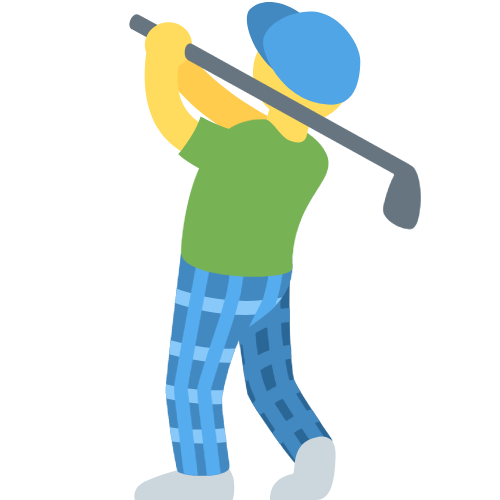

Estos son 3 ejemplos de posibles páginas de proveedores en las que se muestra un artículo con sus opciones. En cada ejemplo las opciones se cargan de manera diferente
En este primer ejemplo las opciones se cargan a partir de un JSON servido en la propia página.
Clothing CerberusEn este segundo ejemplo las opciones también se cargan a partir de un JSON, pero este se sirve a través de una llamada asíncrona.
Clothing MissEn este tercer ejemplo las opciones se cargan directamente en el dom.
Rumpelstiltskin ClothingEn este cuarto ejemplo el proveedor te envía periódicamente el feed que genera para Google Merchant.
Zandisky Clothing